I am a postdoctoral researcher at University of Zaragoza, working with Javier Civera.
I received my PhD from the Chinese University of Hong Kong (CUHK), under the supervision of Ben M. Chen.
My current research focuses on geometric modeling and optimization in 3D computer vision, aiming to develop globally optimal and learning-augmented solutions for problems such as camera geometry estimation, Structure-from-Motion, SLAM, and visual localization. My long-term research goal is to build intelligent visual systems that combine geometric reasoning, optimization, and continual learning to perceive and understand complex, dynamic 3D environments with high reliability and interpretability.
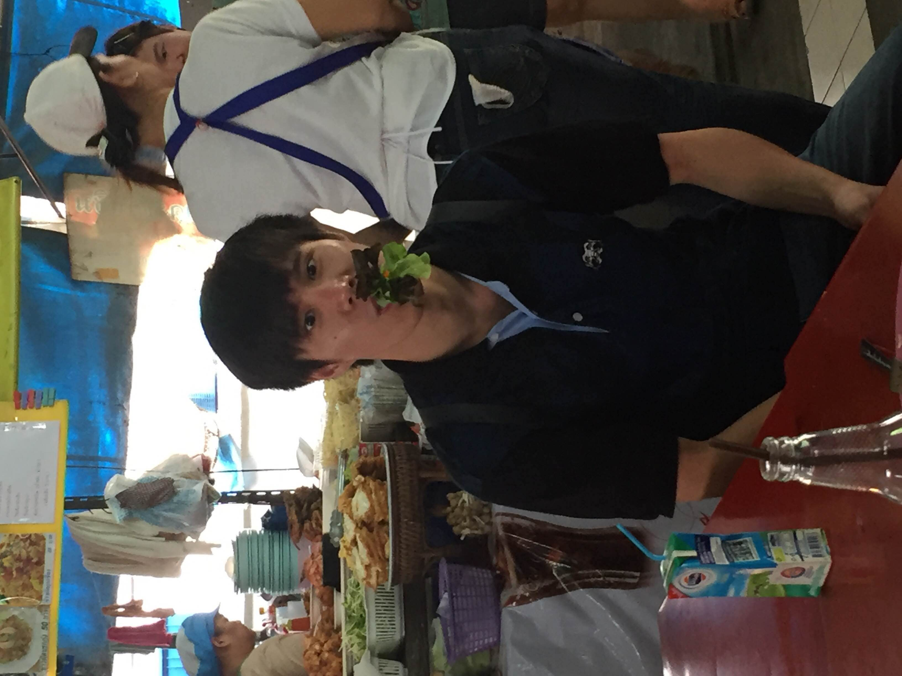
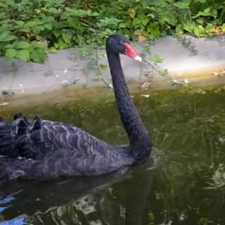
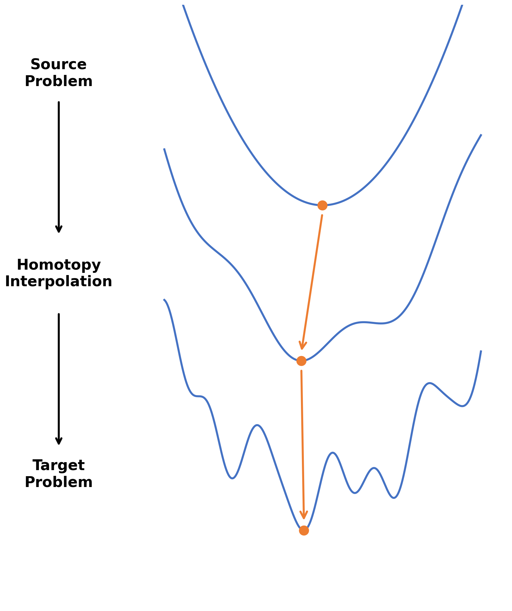
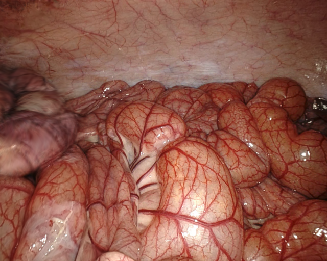
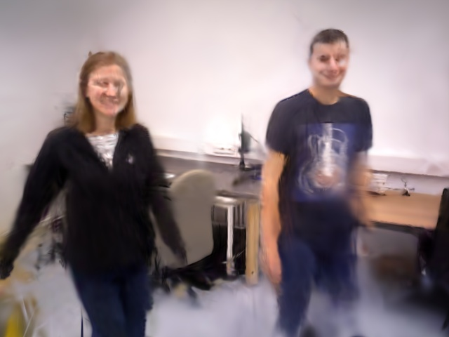
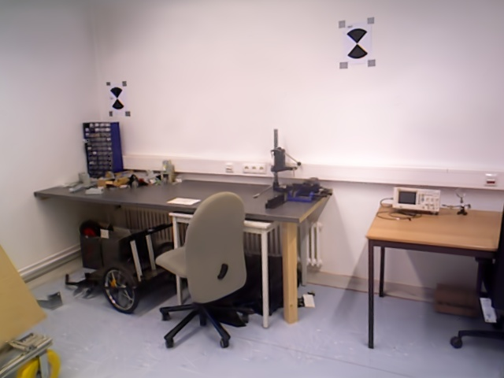
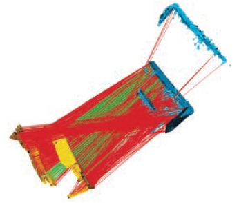
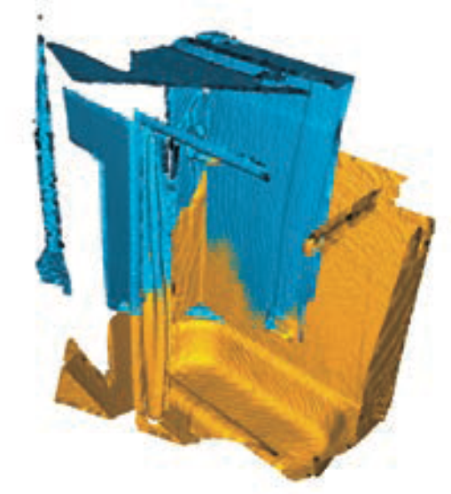
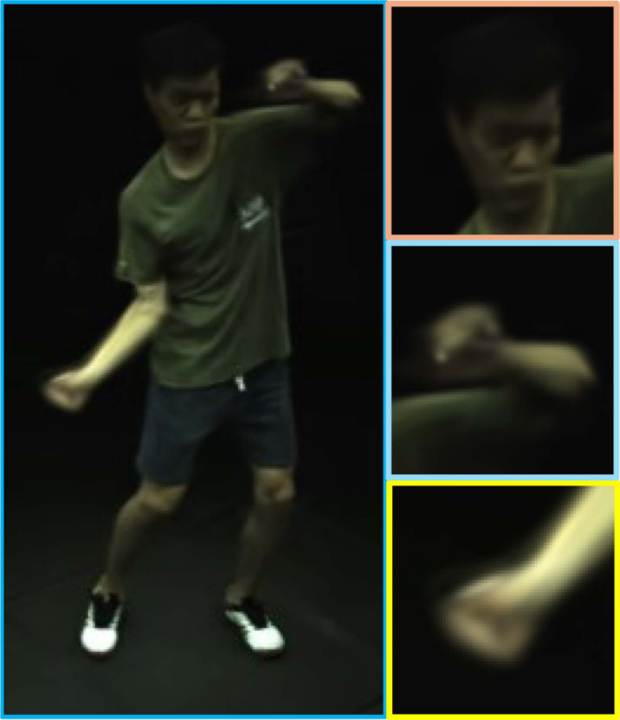
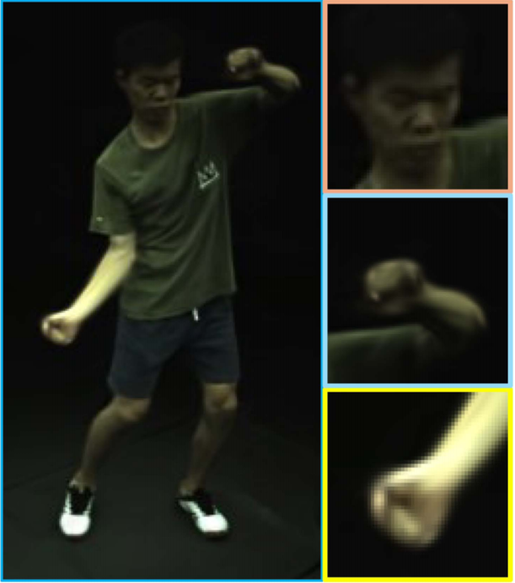
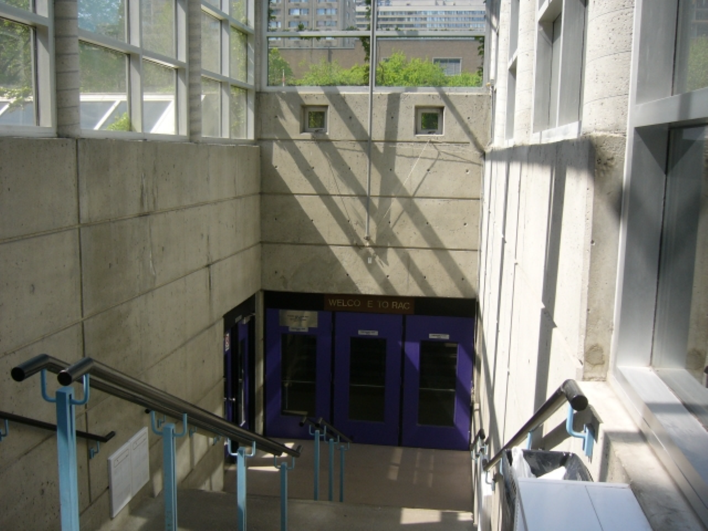
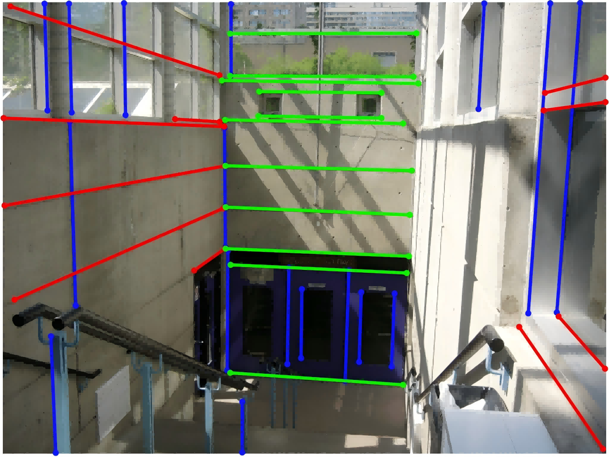
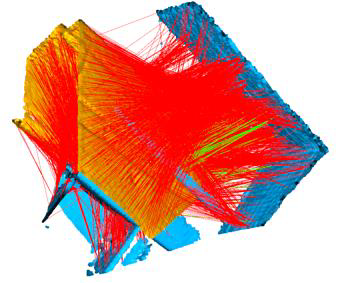
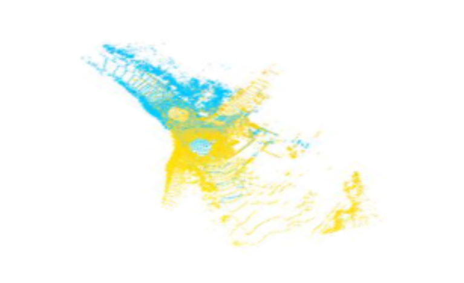
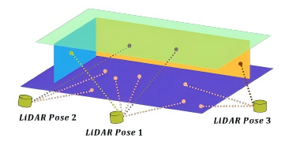
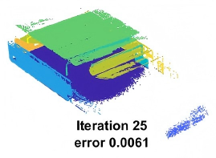
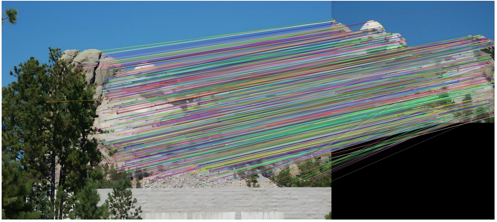
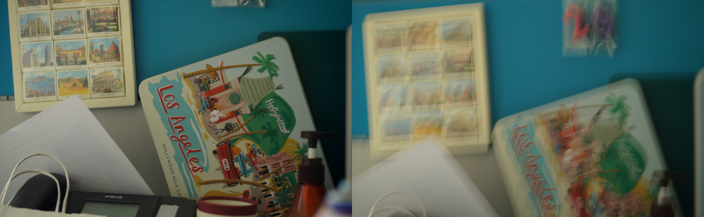
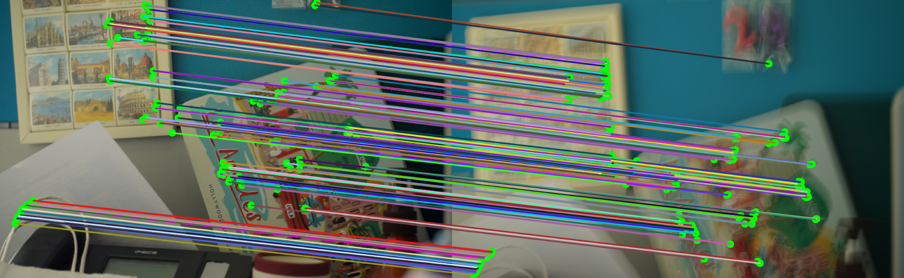
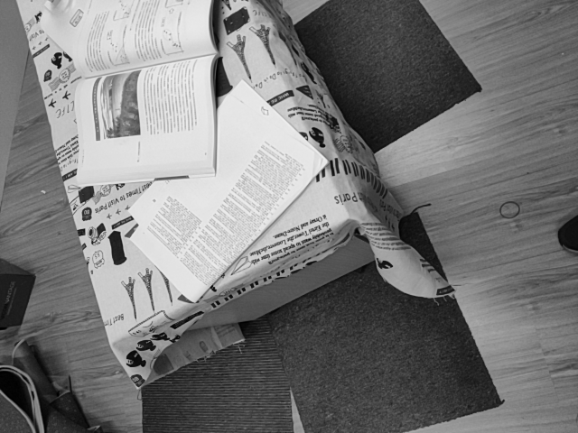
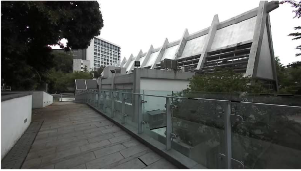
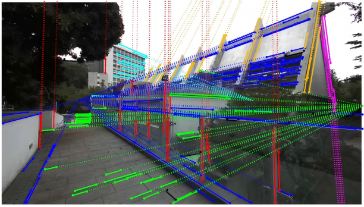
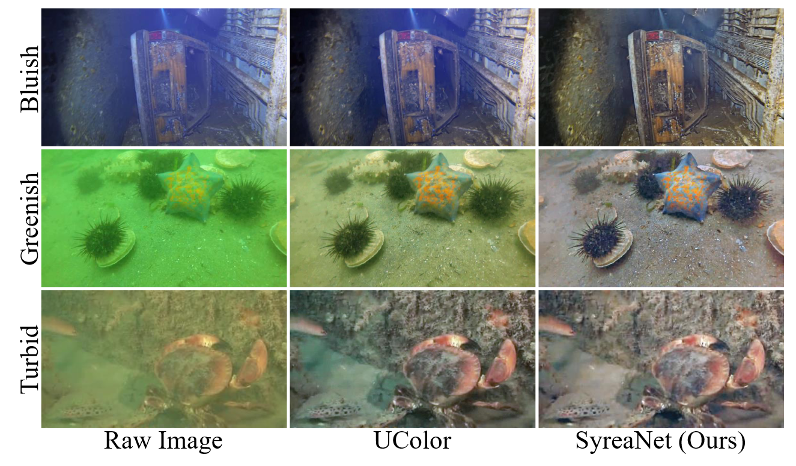